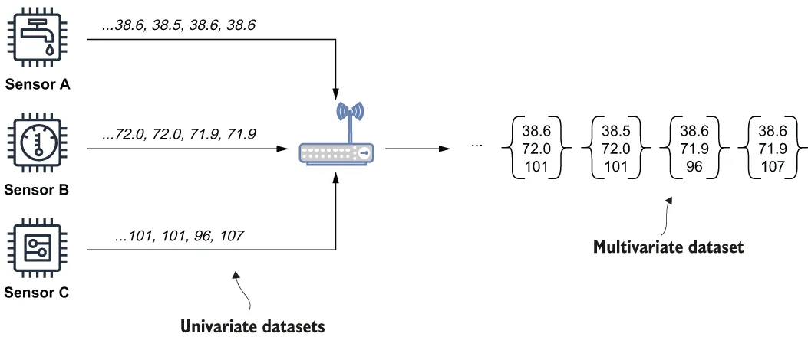

The other aspect of telemetric datasets is the number of variables that are being tracked within them. The most common scenario is when the data contains a set of observations of a single variable (e.g., the readings from the exact same sensor). The more formal term for this type of dataset is univariate, and for our purposes we will assume that all of the datasets collected at the IoT gateway layer are univariate. As you may have guessed, any dataset that tracks more than one variable is known as multivariate and allows us to track the relationship between multiple sensor readings over the same timeframe. Rather than containing a single value at a given point in time, these datasets contain several values. Within a Pulsar-enabled IIoT architecture, multivariate datasets are generated using Pulsar Functions by combining several univariate datasets together, as shown in figure 12.7, where the values from each sensor taken at the same time are combined into a tuple of three values.
遥测数据集的另一个侧面，是其中所跟踪的变量个数。最常见的情形是：数据中包含的是对单个变量的一组观测值（例如来自同一个传感器的那些读数）。这类数据集更正式的术语是单变量（univariate）；而为了我们讨论方便，我们将假定在 IoT 网关层采集到的所有数据集都是单变量的。正如你可能已经猜到的，任何跟踪了多于一个变量的数据集都被称为多变量（multivariate），它让我们能够跟踪同一时间范围内多个传感器读数之间的关系。这类数据集在给定时间点上所包含的不是一个值，而是若干个值。在一个启用了 Pulsar 的 IIoT 架构中，多变量数据集是用 Pulsar Functions 把若干个单变量数据集组合在一起而生成的，如图 12.7 所示——其中各个传感器在同一时刻取到的那些值，被组合成了一个包含三个值的元组。

Figure 12.7 Each sensor emits a sequence of readings at a predetermined interval. Upon receipt on the IoT gateway, these univariate datasets are combined into a multivariate dataset that contains the values of all three sensors at a given point in time. This allows us to detect patterns and correlations between these sensor values.
图 12.7 每个传感器都以预定间隔发出一串读数。在 IoT 网关上一收到这些读数，那些单变量数据集就被组合成一个多变量数据集，后者包含了全部三个传感器在给定时间点上的值。这让我们得以检测这些传感器值之间的模式与相关性。
Multivariate datasets can be used to perform more complex and accurate analysis by including data from multiple sources that is strongly correlated. Since there is no limit to the number of variables that can be contained within these datasets, any number of readings may be combined as needed. In fact, these datasets are well suited to serve as feature stores for any ML model you wish to deploy on the edge. As you may recall from chapter 11, feature stores contain a set of precalculated values required by ML models. These feature sets are populated by external processes that rely on historical data to calculate the values. In a Pulsar-enabled IIoT environment, these multivariate datasets are populated from the univariate datasets being collected on the edge, which ensures that your ML models are using the most-recent data to make their predictions.
多变量数据集可以通过纳入来自多个来源、且彼此强相关的数据，来执行更复杂、更准确的分析。由于这类数据集中所能包含的变量个数没有上限，任何数量的读数都可以按需被组合在一起。事实上，这些数据集非常适合充当任何你想要在边缘侧部署的 ML 模型的特征存储。你应该还记得第 11 章讲过，特征存储中包含的是 ML 模型所需的一组预先计算好的值。这些特征集由一些依赖历史数据来计算数值的外部流程填充。而在一个启用了 Pulsar 的 IIoT 环境中，这些多变量数据集是由正在边缘侧被采集的那些单变量数据集填充的——这确保了你的 ML 模型是在用最新的数据来做预测。